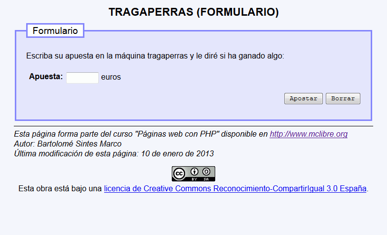
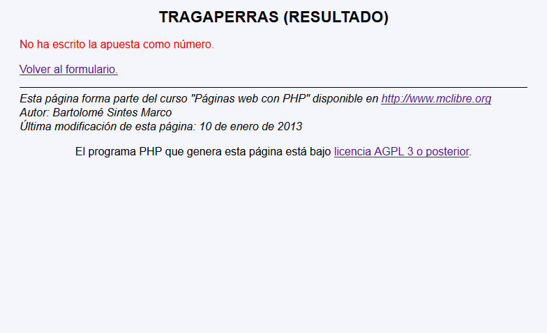
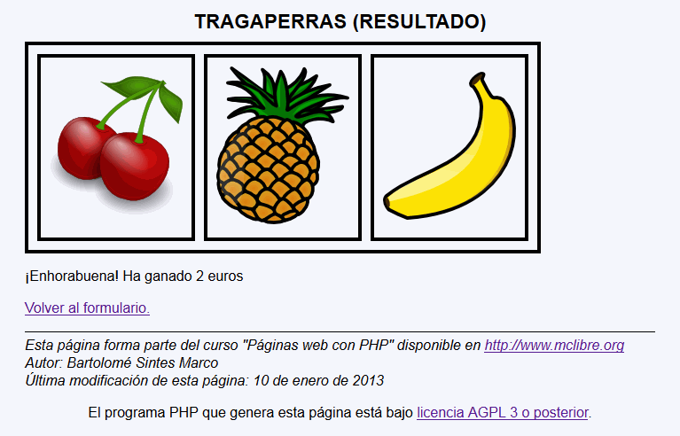
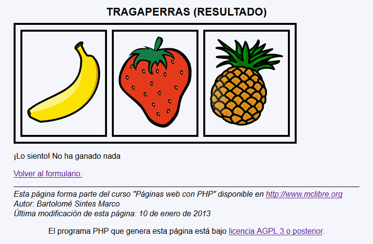

Tragaperras - Ejemplo de programa
Nota: El día del examen los alumnos no tienen acceso a este ejemplo, solamente tienen acceso a las capturas del apartado anterior.
Un ejemplo de programa puede probarse en la ventana siguiente
En este ejercicio se debe crear un programa que pida el valor de una apuesta, simule el resultado de una máquina tragaperras y diga cuánto se ha ganado o perdido.
<?php
$a = rand(1, 7);
print "<p><img src=\"$a.png\" /></p>";
?>
<p><img src="5.png" /></p>
<table style="border: black 4px solid; border-spacing: 10px;">
<tbody>
<tr>
<td style="border: black 4px solid; padding: 10px" alt="fruta"><img src="2.png" /></td>
<td style="border: black 4px solid; padding: 10px" alt="fruta"><img src="1.png" /></td>
<td style="border: black 4px solid; padding: 10px" alt="fruta"><img src="1.png" /></td>
</tr>
</tbody>
</table>




Nota: El día del examen los alumnos no tienen acceso a este ejemplo, solamente tienen acceso a las capturas del apartado anterior.
Un ejemplo de programa puede probarse en la ventana siguiente